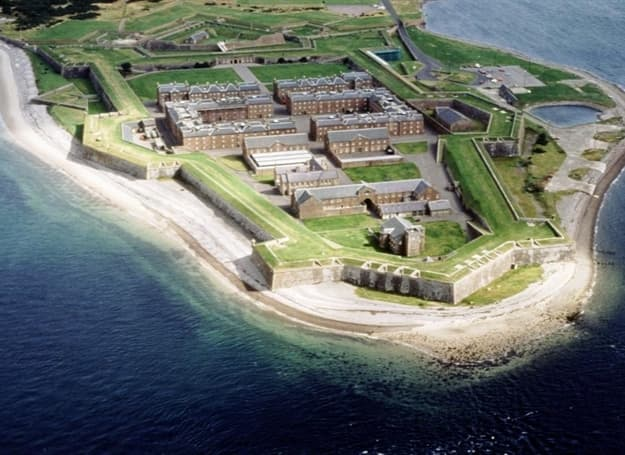
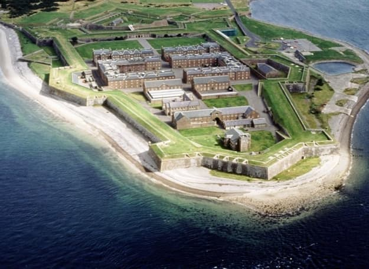

Des activités pour remplir votre séjour
Visitez le Fort George et découvrez tous ses secrets. En une journée complète de visite animée par les meilleurs guides d'Ecosse, votre soif de connaissance sera comblée.

Visitez le Fort George et découvrez tous ses secrets. En une journée complète de visite animée par les meilleurs guides d'Ecosse, votre soif de connaissance sera comblée.
